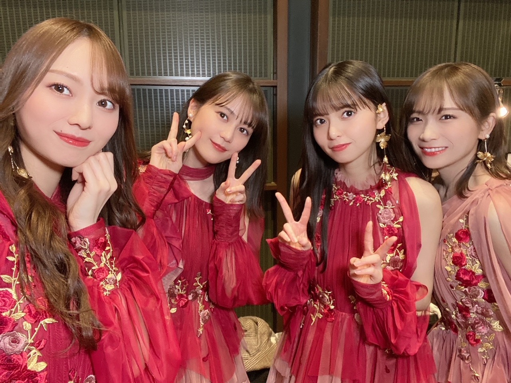
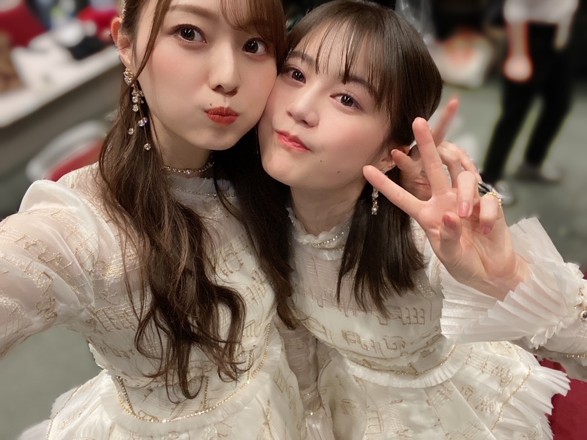
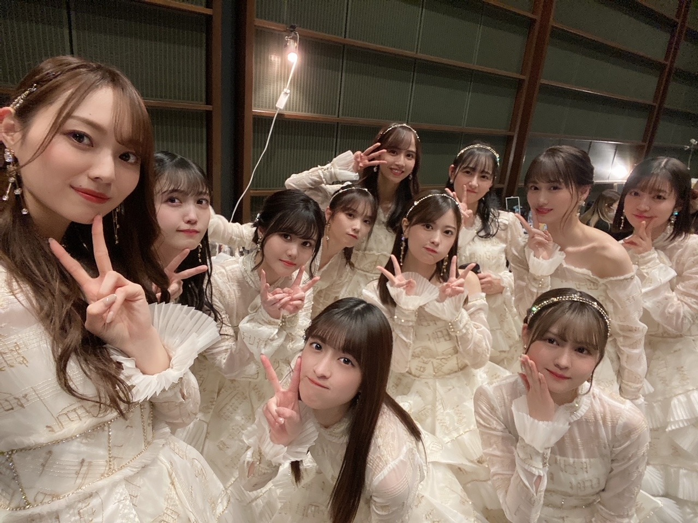

大切にしたいからねえ
２０２２年になり
そこからはもう
猛スピードで毎日過ぎ去ってしまいました。
最高に充実したお正月を迎えたよ〜！
年明けは みんなでジャンプして
最高のスタートでした＼(^^)／
年女と思われがちですが
こう見えて うさぎどし なので 来年です
そして本日２３歳になりました(^-^)
なっちゃいました〜。
たくさんの おめでとう を
ありがとうございます！
どうなんだろう、
ちゃんと年相応でいられているのだろうか...
ちゃんと深みのある人になりたいなあと
思います。
もう立派な大人ですからね、
自分のことは自分でしっかり と！
でも子供らしさというか
そういうものも 忘れたくないですね(^-^)


この生田さん可愛すぎてお気に入りです。てへ
大切な先輩の卒業も
見送ることができました。
本当に綺麗でした。涙も全部！
今年は５期生の加入もありますね。
まだまだ変化していくことが
目に見えてたくさんあるんだろうなあ〜
そんな中でも
変わらないものにもきちんと目を向け
大切に 大切にしていきたいです。
年が明けて 毎日を過ごす中で
改めて思ったことは
大切なものが増えるっていうことは
とても嬉しいことで 心が温まるけど
守れるのだろうかという 不安と 恐怖も
どこかで感じたりするのです...
だからわたしは
強くなりたいと 色んな場面を乗り越える度に
大きな節目を迎える度に おもうのですね、
まあその強さがどんなものなのか
何を持って 強さ というのか
その正解は分からないのだけど...
とにかくたくさんの人たちと
笑って過ごす時間が増えればいいな(^-^)
笑う時間がすごく大切で
みんなの笑顔が可愛くて大好きなので！
最後のTight hug をリリースして
たくさん踊って思ったけど
ハグ もとても大切ですね！
今年はみんなにたくさんギューします！
最近は 新内姉さんに
会う度ギューしてる気がする(^-^)
強く抱き締めてごめんなさい...
目標は色々と書き出してみました〜
小さな目標から 書き出してみてます
思いついたときにサッと(^-^)
今年は 柔軟に対応できる人でいたいです〜！
わたしは今まで
決められたことや正解に
真っ直ぐ進むやり方しか出来なかったのですが
それだけが正しいとは 限らないんだと
周りを見て気づきました
固定概念に囚われすぎず
自分の固まった思考を柔らかくして
いわゆる正解と言われる道だけでなく
突発的に動いてみることで
その時初めて新しいものが生まれることもたくさんあるのかなあと(^-^)
そんな場面にたくさん遭遇してきたので。
あとは
エスカレーターより階段を使う とか
（単純に年齢と共に体力が落ちてきたので）
家族旅行に行く とか 一人旅をする とか
とりあえずいっぱい写真撮る とか
自分から誘ってみる とか
話すスピードをもう少し遅くする とか
料理のレパートリー増やす とか
小さいこともちまちま書いてます〜
お仕事の幅も
広げたいですね
昨年は自分が想像もしていなかった
朝の番組のレギュラーが始まりました。
先輩方がたくさんの道を作ってくださったように
わたしもそんな存在になれたら...

最近集まる度に写真撮るねえ
とにかく、
この夢のような毎日を
きちんと楽しんで生きたいです(^-^)
夢なのかなあと感じる時がたまにあります
悲しさも悔しさも含めて全部
どんな感情も
自分に必要な感情だと学んできたので
それさえ楽しんでいきますね＼(^^)／
まだまだ、足りない部分ばかりです
悔しいとき、 不甲斐ない瞬間、
泣きたくなるほど自分が嫌になる時 瞬間は、
何年歳を重ねても無くなりません
でもきっとそういうものなので、
私を好きでいてくれる方達を大切に大切にして
たくさん愛を伝えて
自分らしく頑張ります！
どうか、こんな私ですが
これからも よろしくお願いします。(^-^)
いつもありがとうございます！
Original：https://www.nogizaka46.com/s/n46/diary/detail/64890?ima=4933&cd=MEMBER